Riot Games LTA North Best of The West
Client: Riot Games
Year: 2025
Role: Set Design | Art Direction | Styling
We handled set design & styling for the Best of the West, building a stylized Western environment that captured the spirit of the concept. Our work included designing and creating custom props such as distressed Wanted posters, a vintage-style High Noon Jhin Show poster, and a hand-painted Best in the West sign as a key visual centerpiece. We also sourced and styled props and wardrobe pieces to match the Western theme, ensuring the set felt cohesive, lived-in, and visually rich. Every detail was crafted to support the narrative and bring the world of Best of the West to life on screen.
Handcrafted Worlds for High-Stakes Showdowns.
Prop Sourcing
Although the location came with a few large furniture pieces, the space was otherwise completely undressed, giving us the freedom to build the world from the ground up. We sourced, customized, and placed props that offered subtle callbacks to the game’s lore and characters. Jhin’s signature mask, a wooden upright piano, a vintage typewriter, gold coins, a saloon sign, missing-person posters, and more. Every touchpoint - from the bottles to the wall art - was crafted to feel straight out of a western, then sprinkled with enough character-driven chaos to give it flair & fun!
Wardrobe
We crafted Western-inspired wardrobe looks for each team, drawing from iconic archetypes of classic Western cinema to shape their on-screen personas. Outfits reflected familiar roles like the outlaw, the sharpshooter, the drifter, and the lawman, but tailored to match each team's unique identity and attitude. We wove in subtle team colors - like green accents for FlyQuest and blue tones for Cloud9 - to ground each look in its competitive identity.

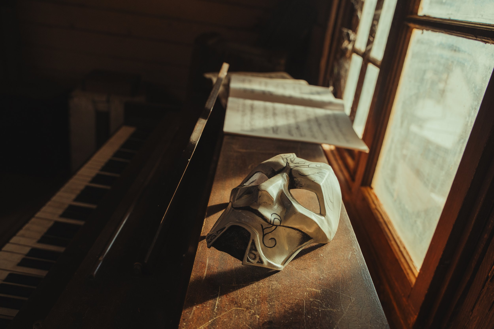
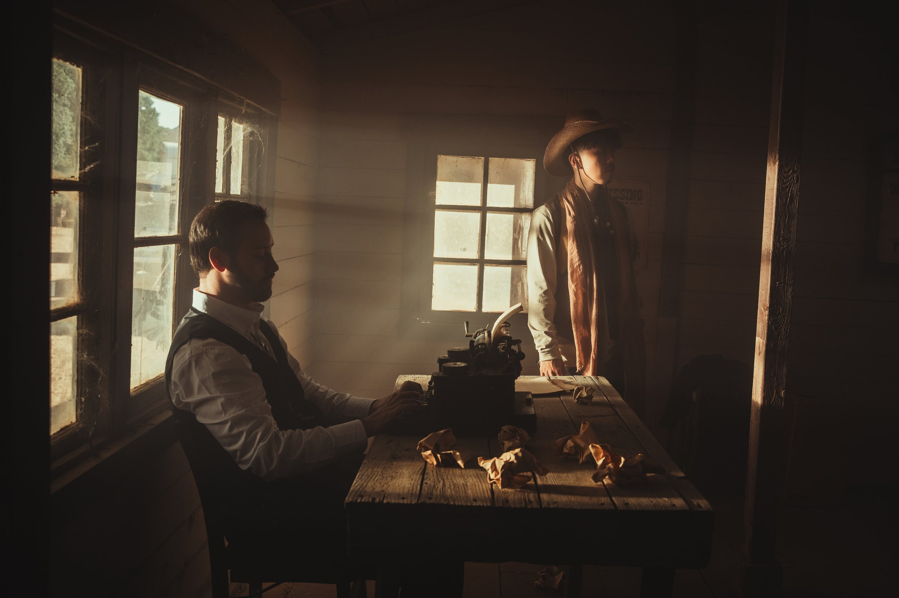
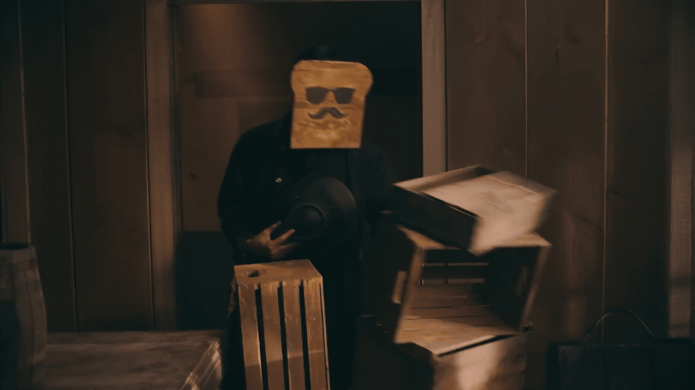
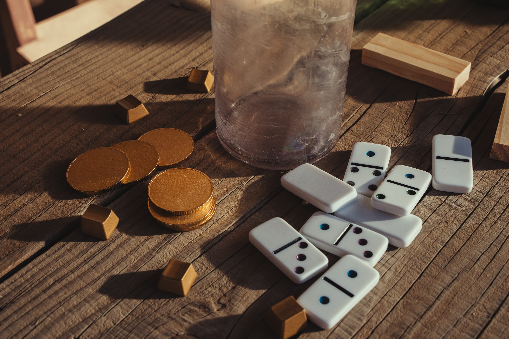
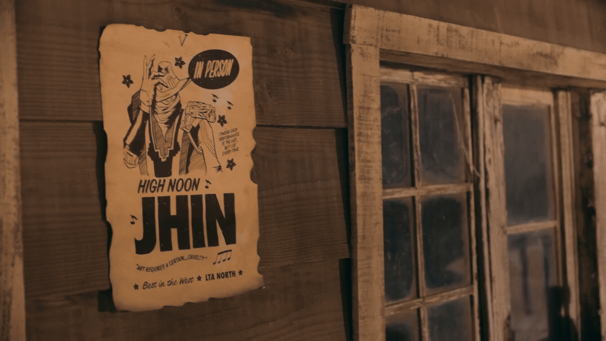
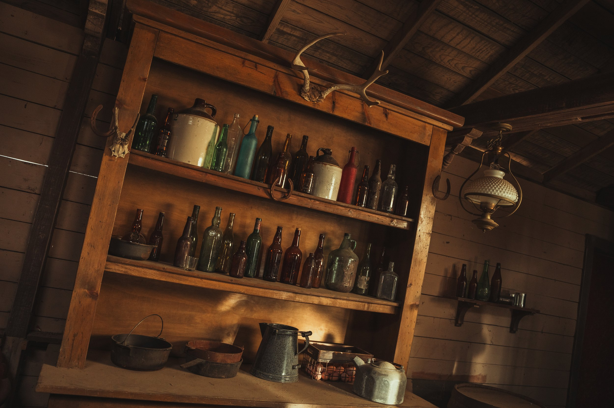
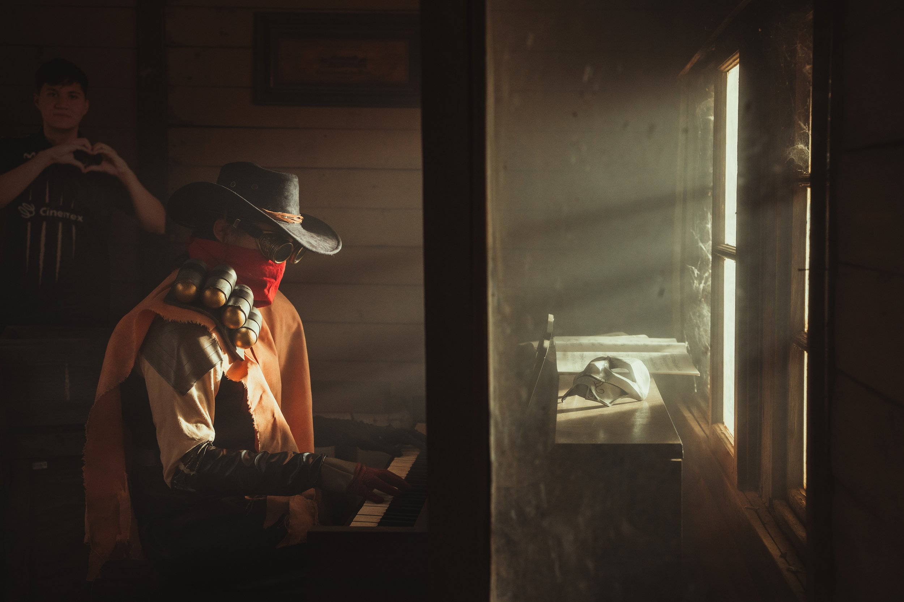
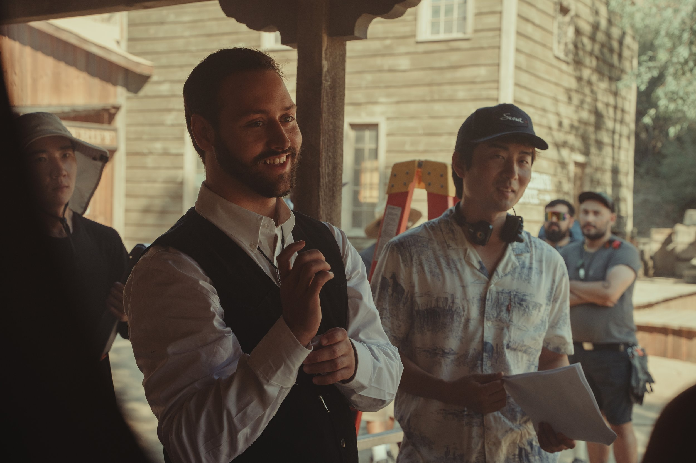
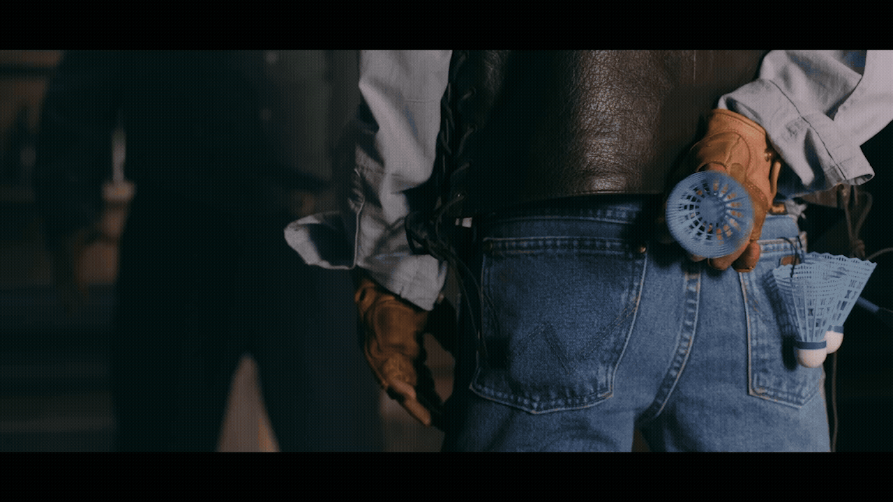
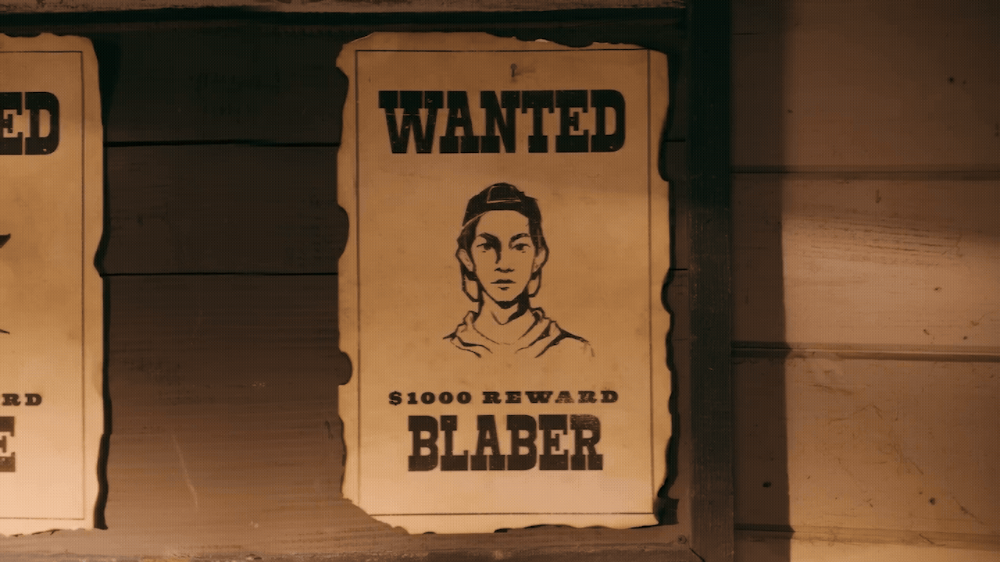
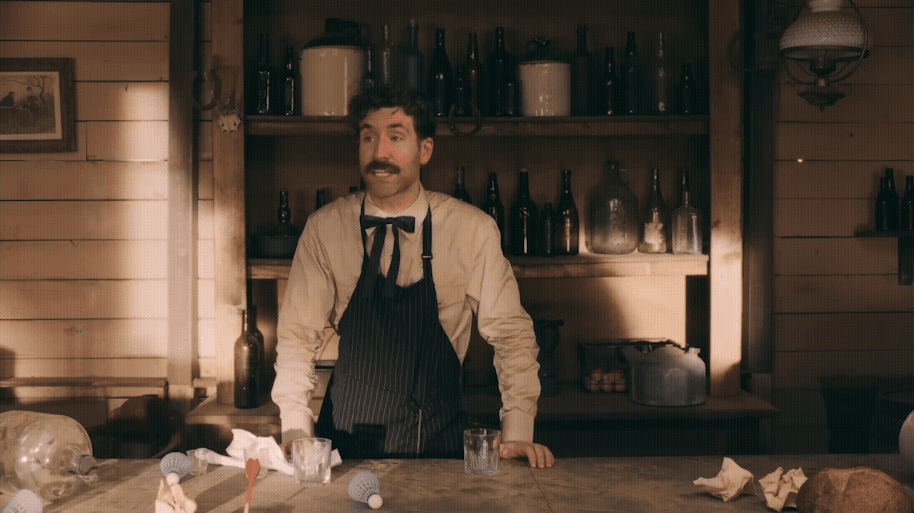
Produced by Riot Games In House Team
Directed by Josh Park